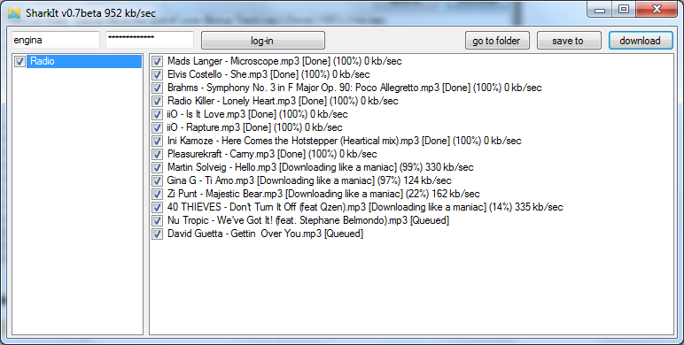

SharkIT is a Grooveshark downloader. It allows you to fetch your playlists, select songs in your playlists and download them all in parallel, with one click. I've coded this in a few hours, it is full of bugs, it does not handle errors (you won't be warned if you typed your password wrong, etc). But it looks like working for now.
BTW, anyone can think of a cool name ?
